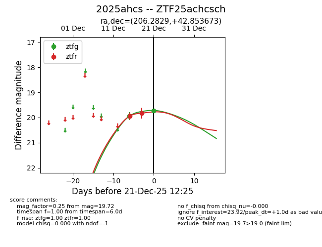
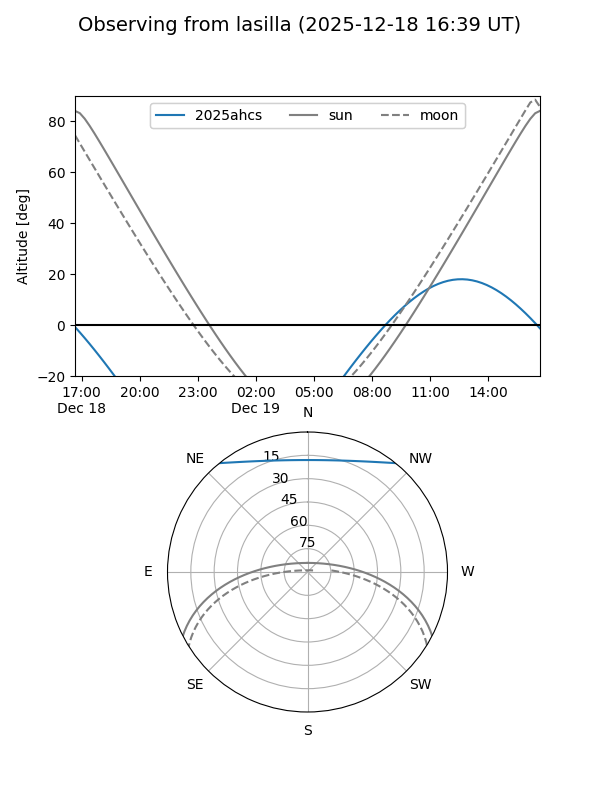
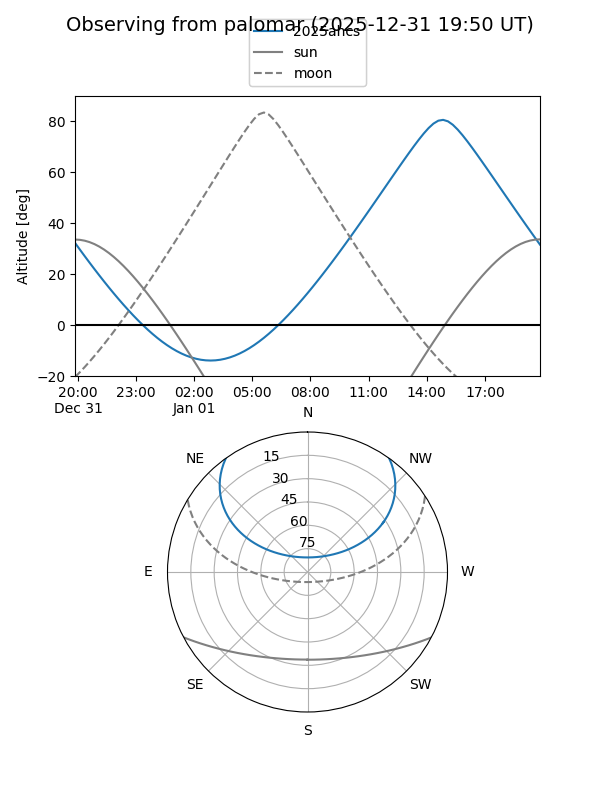
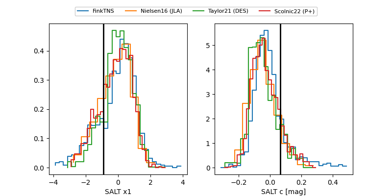

2025ahcs
Target 2025ahcs at 2025-12-21 12:27
Aliases and brokers:
FINK: fink-portal.org/ZTF25achcsch
Lasair: lasair-ztf.lsst.ac.uk/objects/ZTF25achcsch
ALeRCE: alerce.online/object/ZTF25achcsch
TNS: wis-tns.org/object/2025ahcs
YSE: ziggy.ucolick.org/yse/transient_detail/2025ahcs
alt names
ZTF25achcsch (ztf,fink_ztf)
2025ahcs (tns,yse)
Coordinates:
equatorial (ra, dec) = 206.2829,+42.85367
equatorial (HMS+DMS) = 13:45:07.91,+42:51:13.22
galactic (l, b) = (91.6551,+70.86475)
Flags:
Photometry:
last ztfg=19.72, ztfr=19.82
2 ztfg, 2 ztfr detections
Lightcurve

Visibility


Additional plots
